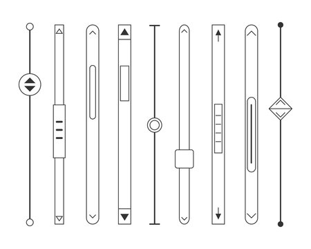
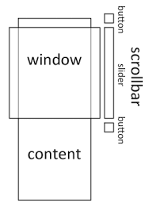
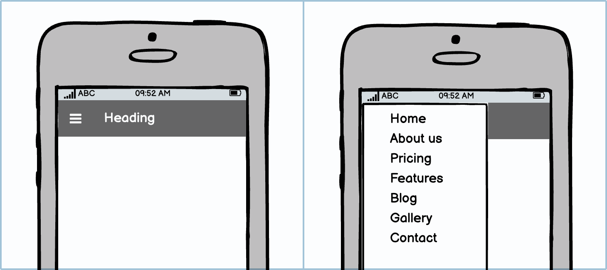
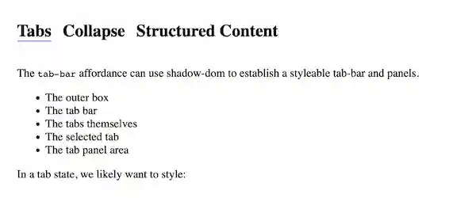
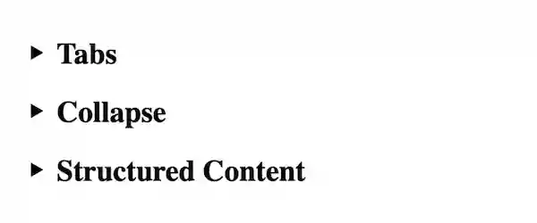

Scrollbars are elements, but there is no <scrollbar> element.
And we don’t use a <scroll> element.
We make things scrollable.
We give things scrollbars.
Review: What happens on a webpage when the text is too long for the window?
The window becomes scrollable. And when the window scrolls, there we find scrollbars.

What do scrollbars do?
Scrollbars show where a visible area is positioned in the context of a larger, not fully-visible area.

As we scroll and the visible area shifts, scrollbars reflect the change.
They do things, too. Scrollbars can be dragged with a pointer to rapidly move thru the whole area they cover.
Scrollbars can be controlled by JavaScript APIs, which can get or set the scroll position.
scroll({ top: 100, left: 100, behavior: 'smooth' })
CSS rules can change how the scrollbars appear.
html { scrollbar-color: blue white; scrollbar-width: thin; } ::-webkit-scrollbar { background-color: white; } ::-webkit-scrollbar-thumb { background: blue; }
And almost any element can use them.
If it has an interface, an API, and it can be styled, then why is it not written out as an element? How is it not a component?
Because it is not part of the document.
Because it is not content.
So then what is it?
It is a way to experience content.
It is an affordance.
“the quality or property of an object that defines its possible uses or makes clear how it can or should be used”
An affordance is something that makes it clearer how to do something.
Most webpages use more affordances than just scrollbars.
We experience affordances every day.

Responsive websites create ‘hamburger menus’ to navigate menus on narrow screens.
Affordances are like on-demand components.

Sections of content are organized into panels, with headings presented as a bar of ‘tabs’.
On narrower screens, that same content might present better as ‘accordions’.

Because things can have more than one affordance.
This is the world of responsive HTML.
...